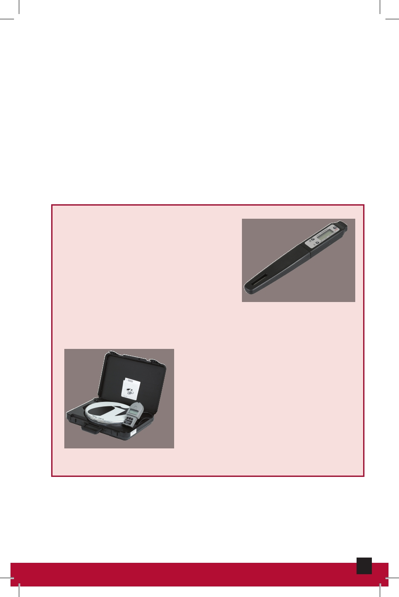

Control Circuits
The link between the load and the input power. Control
circuits start, stop, and control the operation of a load.
These circuits usually contain one or more control devices
including switches and thermostats that apply or remove
power from the loads. Control circuits usually operate at
24 volts, and are also known as the low-voltage circuits.
Low voltage is safer to operate, draws less power, and has
smaller and lighter wiring.
Digital Thermometer
A tool used to measure the
temperature of refrigerant lines
(suction and liquid lines) when
charging cooling systems. It is
also used to measure return and
Digital Thermometer
air supply temperatures.
Electronic Charging Scale
Equipment used to measure the
amount of refrigerant introduced or
removed from an air conditioning
system.
Electronic Charging Scale
33
HVAC Maintenance and Repair